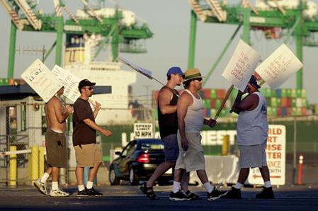

West Coast Ports Nearing Technology Deal?
Industrial Worker - December 2002
West Coast longshoremen and the Pacific Maritime Association reached a tentative agreement Nov. 1 on the use of computer technology . the major sticking point in the bitter dispute that led the bosses to lock workers out two months ago. Since Oct. 8, International Longshore and Warehouse Union members have been working under a Taft-Hartley injunction that provides for fines and possible jail time should union members enforce safety standards or take other industrial action that disrupts the flow of cargo.
The tentative deal resolves the terms under which new computerized technologies tracking the movement of shipping containers will be introduced on the docks. As shippers have moved from pen and paper cargo tracking systems to bar codes and scanners, much of the work of planning and tracking shipments has been moved from ILWU members on the waterfront to offices far removed from other maritime workers. Now the need to rekey and reformat information would be eliminated, with data transferred directly from shippers' computer systems.
The ILWU agreed to computerizing this work early in the talks, but had insisted that any new jobs created by the introduction of new technology remain under union jurisdiction. Under the tentative agreement, some dockyard and rail planning work would come under ILWU jurisdiction, but work performed by vessel planners stationed at inland locations would not. There is of course no technological reason for this work to be performed far from the waterfront; rather, the bosses have been moving the work in order to escape union working conditions and weaken workers' power.
Under the deal, no presently employed worker would lose their job. But as workers retire, they would not be replaced . further eroding the union's jurisdiction and membership. As many as 600 union jobs could ultimately be lost.
The dockworkers' underfunded pension plan is now the major remaining issue in the talks. Mechanization has slashed the ranks of working longshoremen from more than 100,000 50 years ago to about 11,000 today, while the volume of cargo moving through the ports has more than tripled. The number of retirees has been rising accordingly.
A 4-tier Work Force
It appears that a union proposal to increase the numbers of enrolled dock workers . extending the union contract to the hundreds of "casual" workers who work alongside union longshoremen for lower wages and no benefits . has been dropped. The West Coast docks maintain a four-tier labor force, comprised of "steady," "A" and "B" men, all represented by the union, and "casuals," who are not.
Steady and A men have full union membership, but A men must report to the hiring hall and have weaker job guarantees. B men pay ILWU dues and receive union wages and benefits, but are not guaranteed work in slack times and can not vote in union elections. While many "casuals" work every day during the busy season, they have no union protection or recall rights.
Many dock workers have welcomed mechanization's role in reducing injuries and the hard physical labor that once wrecked their health, but only a small portion of the enormous savings has gone their way in the form of higher wages. Enormous productivity gains that could have been used to slash working hours on the waterfront have instead gone into the pockets of the shipping and stevedoring firms.
In this dispute, the dockworkers have faced the combined power of the employers and the U.S. government. Had the ILWU not reached technology deal, it is likely that the Bush administration would have legislated the bosses' demands.
Nor could the dockworkers count on the solidarity of other maritime unions. The presidents of four other unions on the West Coast waterfront publicly announced that they would not support the ILWU in its fight.
Maritime workers in the rest of the world pledged solidarity, but continued to work cargo shipping to and from the West Coast ports as usual. Since dockworkers in other countries are not bound by U.S. labor laws, international industrial action would have quickly rendered the Taft-Hartley injunction meaningless . leaving the Pacific Maritime Association no choice but to settle on workers' terms.

